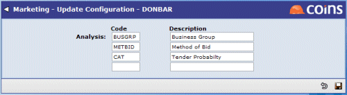

Configuration
Use Configuration to set up the analysis sets.

Use Analysis Sets to set up the valid options for each analysis set; use the Type selector to choose the analysis set to maintain.
If you want users to be able to enter and save details without necessarily selecting an option for each of the analysis sets, create a blank entry for each set. If you do not do this, will prompt the user to "complete all drop-down selections" if they try to save a record and have not selected values for all the analysis sets.